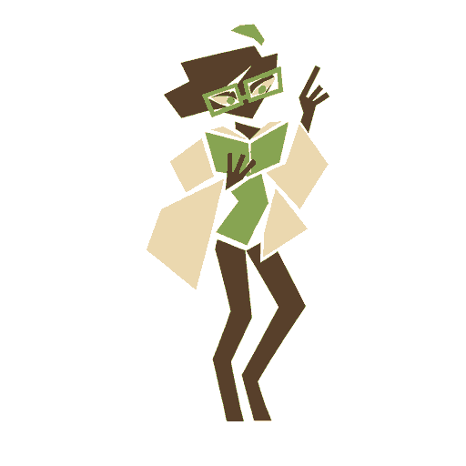
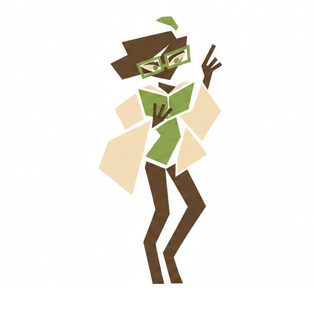
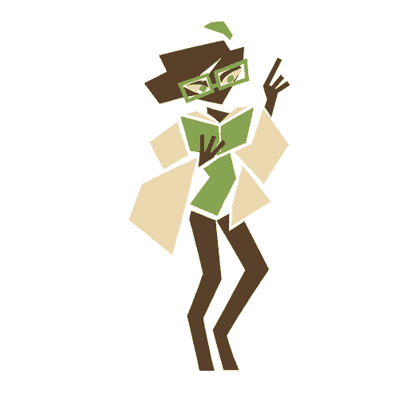

CHARACTER STUDY / E · 03
Room for
individuals.
Three perspectives. Their own interests, judgment, and quirks.
Generated poses, directly traced and compared.
A WAY OF THINKING
Academic
SCRIPTED SAMPLE · NO AUDIOAppearance preview. No models are loaded and no computer actions run.
Ready to explore.
PIECE BY PIECE
The same hand. A different pose.
Named pieces travel between poses.
Click a piece to inspect it.
Loading body map…
Joint guides and piece ownership are editable drafts. Morphing deliberately bends the geometry; the complete target artwork is restored at the end. Dragging here previews movement.
Watch actual browser playback
SOURCE / VECTOR
The same pose. Check the match.
Academic / standing



The SVG follows the generated pose with edge cleanup of at most 0.75 source pixels. Exact boundary traces are also available. Palette normalization removes generation texture; it does not redraw the character. The source remains available for comparison.


01 / POSE LIBRARY
More than a resting face.
Expanded poses and mapped body pieces.
Everyday, specialist,
and optional playful studies.
Compare with the selected E reference

Pose inventory and next additions
Existing artwork and planned additions are listed separately. Waiting, blocked, and completion states can reuse suitable poses.
02 / SMALL IDENTITIES
A face. A signature.
Face cards and role motifs.
24, 48, and 96 pixel studies.

03 / AGENT PRESENCE
Know who has the pointer.
Role color plus a personal mark.
Browser proof · OS integration
comes later.

ACADEMIC / ARROW
Try the pointer here.Move over the pad, or play the sample on touch.
Illustrated agent pointer; your normal cursor stays visible.